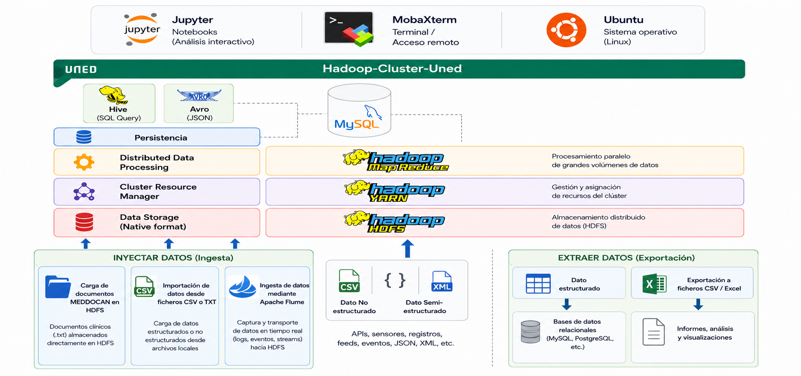

Capítulo 5.6 Lección 4.Inyección/Extracción de datos.
Lección 4.Inyección/Extracción de datos
Lección 4.Inyección/Extracción de datos
Una vez desplegada la infraestructura Hadoop y comprendidos los componentes fundamentales del ecosistema, el siguiente paso consiste en aprender cómo incorporar información al clúster y cómo recuperar posteriormente los resultados generados durante el procesamiento distribuido.
La gestión del ciclo de vida de los datos constituye una de las tareas más importantes dentro de cualquier plataforma Big Data. En esta lección se estudian las técnicas necesarias para cargar información desde el sistema de archivos local hacia HDFS, extraer posteriormente los resultados obtenidos y automatizar la ingesta de datos mediante herramientas del ecosistema Hadoop.
Los conjuntos de datos utilizados durante el curso, descritos previamente en el apartado de Datasets, serán incorporados al sistema de archivos distribuido HDFS mediante los comandos Hadoop correspondientes. Posteriormente serán procesados utilizando Hadoop Streaming y los resultados obtenidos podrán ser almacenados en sistemas externos como MySQL para facilitar su explotación y análisis.
Durante este proceso, los datos podrán almacenarse utilizando diferentes formatos de serialización como CSV, Avro o Parquet, optimizando tanto el almacenamiento como el rendimiento de lectura y escritura dentro del ecosistema Hadoop.

Flujo de datos dentro de la arquitectura Cluster-UNED.
La correcta gestión de la entrada y salida de datos constituye uno de los aspectos fundamentales en cualquier arquitectura Big Data. Tras completar esta lección, el estudiante será capaz de incorporar información al clúster Hadoop, administrar ficheros distribuidos, automatizar procesos de ingesta mediante Apache Flume y preparar los datos para su posterior procesamiento utilizando las distintas tecnologías del ecosistema Hadoop.